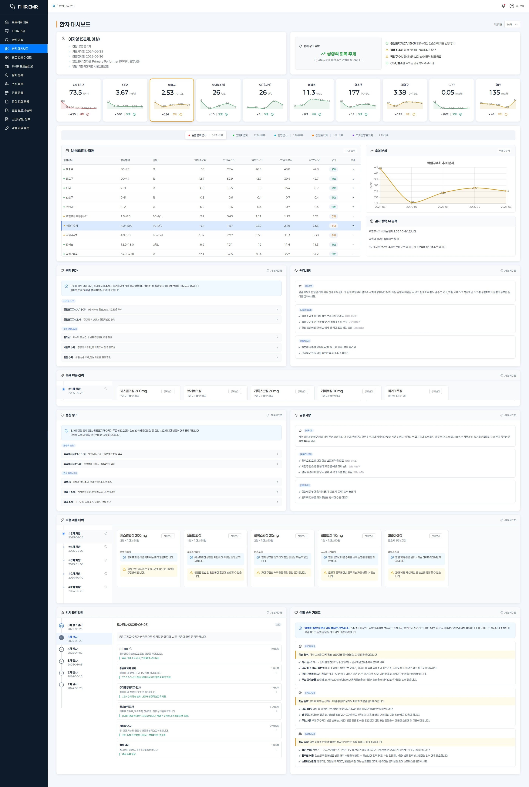
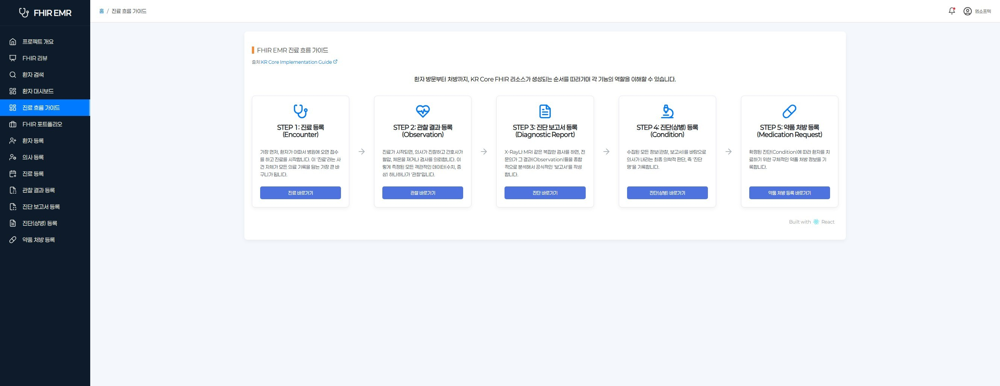
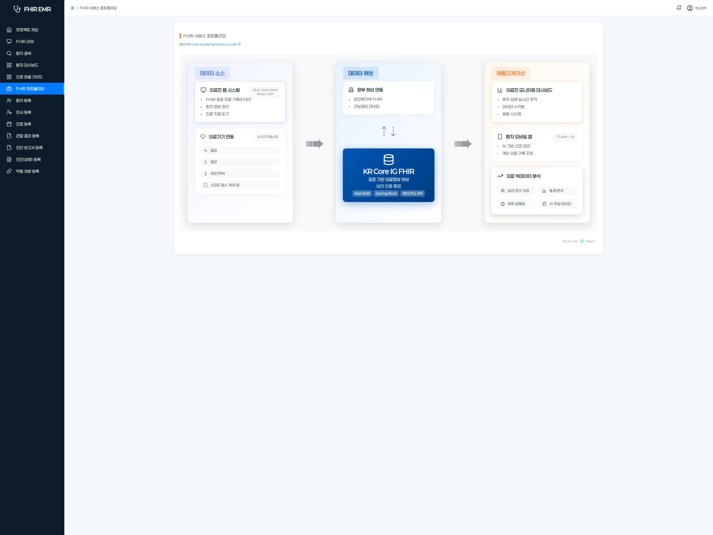
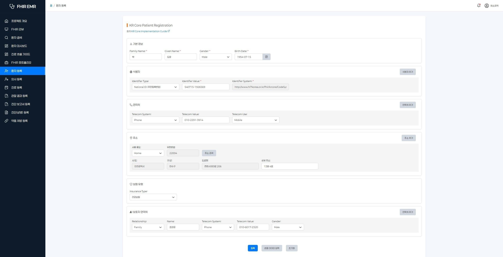
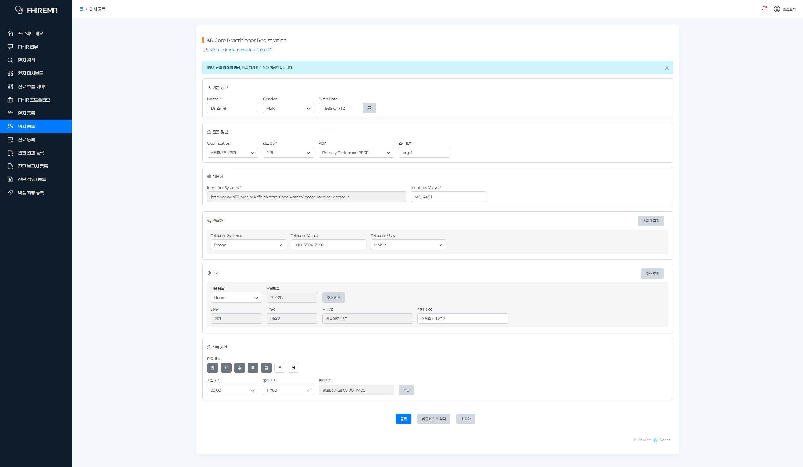
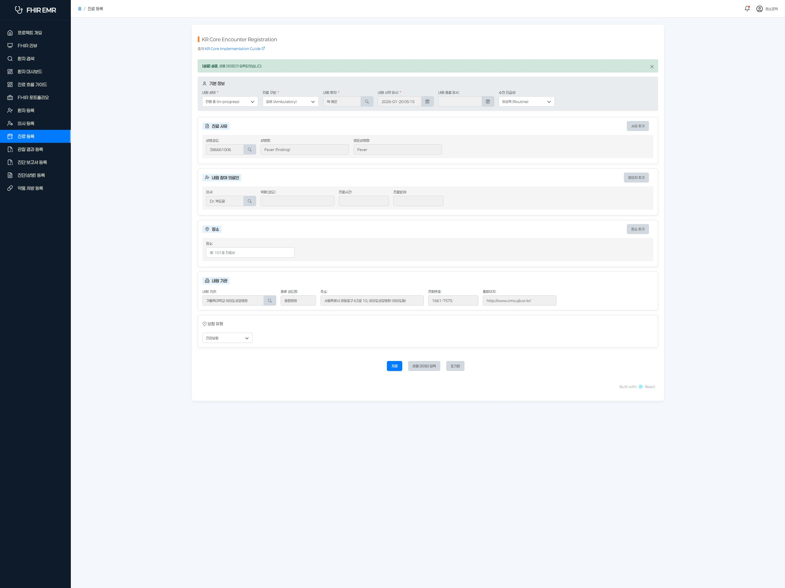
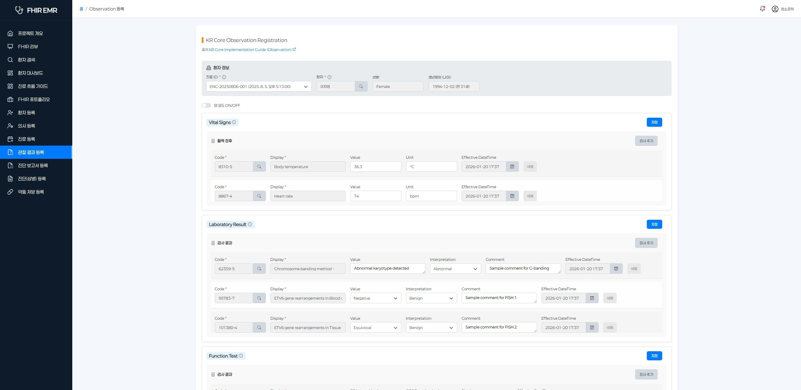
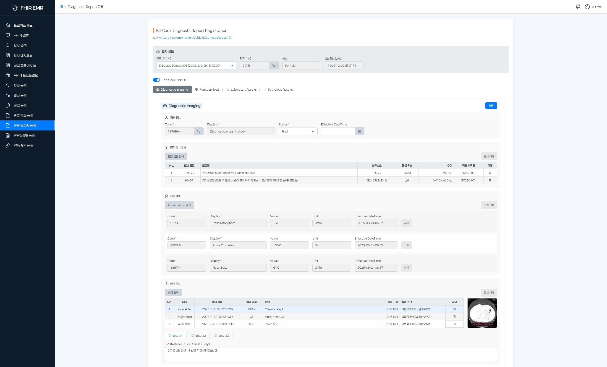
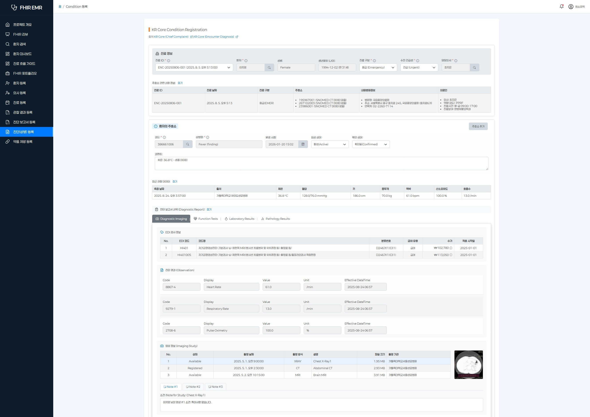
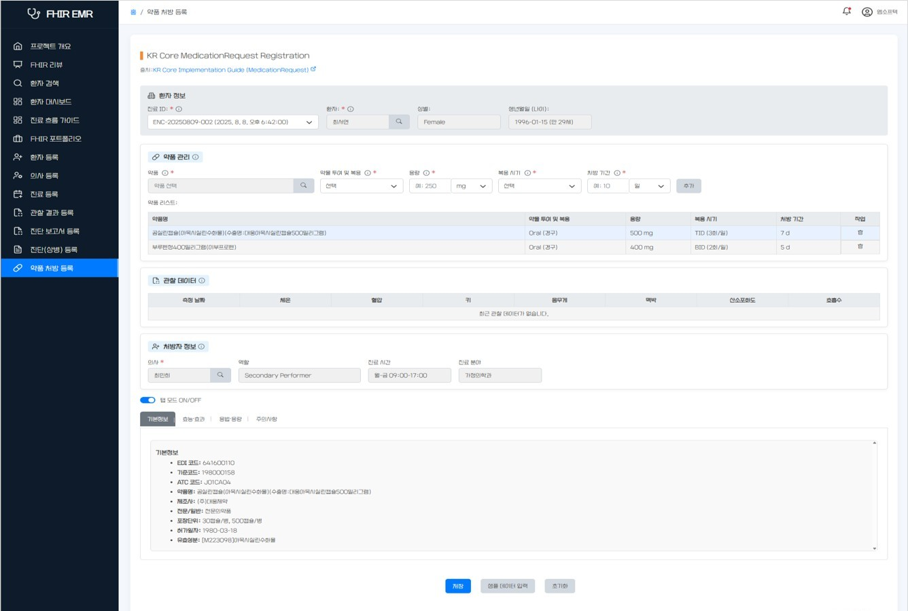

An educational EMR system designed for medical informatics and health administration students to learn FHIR data architecture through hands-on practice. Built on real clinical standards — SNOMED-CT, LOINC, EDI, and ATC codes — with pharmaceutical data sourced from Korea's HIRA database, ensuring every interaction reflects production-grade healthcare data.
FHIR is becoming the global standard for healthcare data exchange, but most students learn it only through documentation. This project is a hands-on educational EMR where medical informatics and health administration students experience the full clinical workflow — patient registration, encounters, observations, diagnostic reports, conditions, and prescriptions — all structured as KR Core FHIR R4 resources. By using the system, students naturally learn how FHIR data architecture works in practice.
The system is built on real clinical standards — SNOMED-CT, LOINC, EDI, and ATC codes — with pharmaceutical data sourced from Korea's HIRA database. This is not a simplified mock-up — it's a production-grade data environment where students work with the same standards and data that real hospitals use.
The Patient Dashboard aggregates all clinical data into a single view — trend charts, AI-generated health assessments, medication history, and lifestyle guidance. The AI layer, powered by the same Agent Orchestration Platform used across MSoftech's products, automatically generates comprehensive patient summaries from raw FHIR data — giving students insight into how AI-assisted clinical decision support works in modern healthcare systems.









